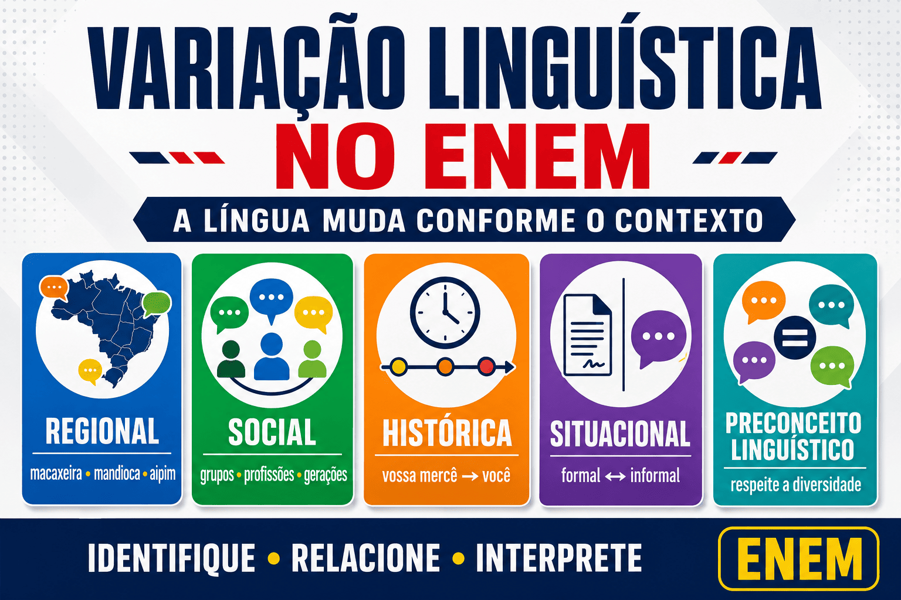

Variação Linguística no ENEM: tipos, exemplos e preconceito linguístico
A variação linguística no ENEM é estudada a partir das diferentes maneiras de utilizar a língua em situações sociais concretas. Regionalismos, marcas de oralidade, gírias, mudanças históricas, registros profissionais e diferenças entre contextos formais e informais podem aparecer em poemas, propagandas, músicas, crônicas, tirinhas e outros gêneros.
Mais do que memorizar classificações, o candidato precisa compreender que a língua portuguesa não é utilizada da mesma maneira por todos os falantes. As escolhas linguísticas variam conforme a região, o grupo social, a época, a idade, a profissão, o interlocutor e a finalidade da comunicação.
Neste guia do Mestre Kira, você aprenderá o que é variação linguística, conhecerá seus principais tipos, entenderá a diferença entre variação, norma-padrão e inadequação comunicativa e descobrirá como o assunto é cobrado nas questões de Linguagens.

O que é variação linguística?
Variação linguística é o fenômeno pelo qual uma língua apresenta diferentes formas de uso. Essas diferenças podem ocorrer na pronúncia, no vocabulário, na construção das frases, nos significados e no grau de formalidade.
A língua não é uma estrutura completamente uniforme. Ela acompanha a diversidade dos falantes e as transformações da sociedade. Por isso, uma mesma ideia pode ser expressa de diferentes maneiras:
- “Nós iremos à escola amanhã.”
- “A gente vai para a escola amanhã.”
- “A gente vai pra escola amanhã.”
As três construções comunicam uma informação semelhante, mas apresentam diferenças de registro, estrutura e grau de formalidade. A escolha entre elas depende da situação comunicativa.
Ideia essencial: as línguas variam porque são utilizadas por pessoas que vivem em regiões, épocas, grupos e situações diferentes.
Por que a língua portuguesa apresenta variações?
As variações surgem porque os falantes não possuem experiências sociais e culturais idênticas. Além disso, cada situação exige escolhas linguísticas específicas.
Entre os fatores que influenciam a linguagem estão:
- localização geográfica;
- idade;
- grupo social;
- escolaridade;
- profissão;
- época histórica;
- grau de intimidade entre os interlocutores;
- finalidade comunicativa;
- modalidade oral ou escrita;
- meio de circulação da mensagem.
Uma mesma pessoa também modifica sua linguagem. O estudante pode conversar informalmente com os amigos, escrever uma mensagem abreviada no celular e, em outro momento, utilizar uma linguagem formal para produzir a redação do ENEM.
Como a variação linguística é cobrada no ENEM?
A Matriz de Referência de Linguagens prevê habilidades relacionadas à identificação de marcas linguísticas, à associação entre variedades e situações sociais e ao reconhecimento dos usos da norma-padrão.
As questões podem exigir que o candidato:
- identifique uma variedade regional;
- reconheça marcas de oralidade;
- relacione a linguagem ao grupo social representado;
- analise a adequação de um registro ao contexto;
- compreenda mudanças históricas da língua;
- reconheça a função de uma gíria ou expressão popular;
- interprete a linguagem utilizada para construir uma personagem;
- identifique uma situação de preconceito linguístico;
- analise a aproximação entre um texto e seu público-alvo;
- compreenda os usos sociais da norma-padrão.
No ENEM, a questão normalmente não pergunta apenas “qual é o tipo de variação?”. É comum que solicite a função daquela escolha linguística dentro do texto.
Principais tipos de variação linguística
1. Variação regional ou diatópica
A variação regional ocorre em função da localização geográfica dos falantes. Diferentes regiões podem apresentar vocabulários, pronúncias, expressões e construções próprias.
Veja alguns exemplos:
- macaxeira, mandioca e aipim;
- jerimum e abóbora;
- menino, garoto, guri e piá;
- oxente, uai e bah;
- mexerica, tangerina e bergamota.
Essas diferenças não significam que uma região utiliza a língua corretamente e outra incorretamente. Elas revelam a diversidade cultural e histórica do país.
Como pode aparecer no ENEM?
O exame pode apresentar um poema, uma canção, uma narrativa ou uma conversa que contenha regionalismos. A questão pode perguntar como essas escolhas:
- identificam o espaço representado;
- valorizam uma cultura regional;
- constroem a identidade do falante;
- aproximam o texto da oralidade;
- preservam expressões de determinada comunidade.
2. Variação social ou diastrática
A variação social está relacionada aos grupos que compõem a sociedade. Fatores como idade, profissão, escolaridade, convivência cultural e pertencimento a determinadas comunidades influenciam os usos da língua.
São exemplos:
- gírias utilizadas por jovens;
- vocabulário próprio de médicos, professores, advogados ou profissionais de tecnologia;
- expressões utilizadas por grupos esportivos ou culturais;
- formas linguísticas associadas a diferentes comunidades de fala;
- maneiras de falar relacionadas a determinadas gerações.
Um profissional da área jurídica pode utilizar expressões como “impetrar recurso” e “deferir o pedido”. Um profissional de tecnologia pode empregar termos como “servidor”, “interface” e “banco de dados” com sentidos específicos de sua área.
A linguagem profissional facilita a comunicação entre integrantes de uma área, mas pode precisar ser adaptada quando o texto se dirige ao público geral.
3. Variação histórica ou diacrônica
A variação histórica corresponde às transformações que a língua sofre ao longo do tempo. Palavras desaparecem, surgem novas expressões, formas de tratamento são modificadas e alguns termos adquirem outros significados.
Exemplos:
- “vossa mercê” transformou-se em “você”;
- “vosmecê” deixou de ser uma forma comum de tratamento;
- “botica” foi substituída, em muitos contextos, por “farmácia”;
- palavras ligadas às tecnologias digitais passaram a integrar o cotidiano;
- expressões anteriormente frequentes podem parecer antigas ao leitor contemporâneo.
Textos literários, cartas antigas, documentos históricos e anúncios de outras épocas ajudam a perceber essas mudanças.
Como pode aparecer no ENEM?
A prova pode comparar textos produzidos em épocas diferentes e solicitar que o candidato identifique:
- mudanças no vocabulário;
- transformações nas formas de tratamento;
- alterações ortográficas;
- diferenças na maneira de representar determinados grupos;
- modificações provocadas por mudanças sociais e tecnológicas.
4. Variação situacional ou diafásica
A variação situacional ocorre quando o falante adapta sua linguagem ao contexto de comunicação. O grau de formalidade depende do interlocutor, da finalidade, do gênero textual e do ambiente.
Compare:
Situação formal: “Solicito informações sobre o resultado do processo seletivo.”
Situação informal: “Você sabe quando sai o resultado?”
As frases procuram obter uma informação semelhante, mas são adequadas a situações diferentes.
A capacidade de adaptar a linguagem ao contexto é chamada de competência comunicativa. Um falante competente não utiliza sempre o registro mais formal; ele reconhece qual linguagem é apropriada para cada situação.
5. Variação entre oralidade e escrita
A fala e a escrita possuem características próprias. Na oralidade, os interlocutores podem utilizar entonação, gestos, pausas, repetições e correções imediatas. Na escrita, é necessário organizar muitas dessas informações por meio de palavras, pontuação e estrutura textual.
Na fala espontânea, são comuns:
- interrupções;
- repetições;
- hesitações;
- reduções como “tá”, “pra” e “cê”;
- marcadores como “né”, “então” e “tipo”;
- frases que dependem do contexto imediato.
Isso não significa que a fala seja desorganizada. Ela apresenta regras e recursos adequados à interação oral.
6. Variação individual ou idioleto
Cada pessoa desenvolve determinadas preferências de vocabulário, pronúncia, entonação e organização das frases. Esse conjunto de características individuais recebe o nome de idioleto.
Na literatura, essas marcas podem ajudar a diferenciar personagens e construir vozes narrativas específicas.
Norma-padrão, norma culta e variedades linguísticas
Esses conceitos não devem ser tratados como sinônimos absolutos.
Norma-padrão
A norma-padrão corresponde a um modelo de referência utilizado no ensino, em documentos, em avaliações e em situações formais de escrita. Ela procura estabelecer certa uniformidade para contextos que exigem comunicação pública e institucional.
Norma culta
A norma culta corresponde aos usos linguísticos efetivamente realizados por falantes escolarizados em situações mais monitoradas. Como é um uso real, também pode apresentar variações.
Variedades populares
São formas de uso associadas a diferentes comunidades e grupos sociais. Elas apresentam regularidades e permitem a comunicação entre seus falantes, embora nem sempre coincidam com as prescrições da norma-padrão.
Reconhecer a legitimidade das variedades linguísticas não elimina a importância de aprender a norma-padrão. O objetivo é ampliar os recursos do estudante para que ele possa utilizar a linguagem adequada em diferentes situações.
Variação linguística significa que qualquer forma serve em qualquer situação?
Não. Compreender a variação linguística não significa afirmar que todas as formas são igualmente adequadas em qualquer contexto.
Uma abreviação como “vc” pode funcionar em uma conversa informal, mas não é adequada para uma redação do ENEM. Uma expressão técnica pode ser eficiente entre especialistas, mas dificultar a compreensão de um público não especializado.
A análise deve considerar:
- quem está falando ou escrevendo;
- quem receberá a mensagem;
- qual é a finalidade;
- qual é o gênero textual;
- onde o texto circulará;
- qual grau de formalidade é esperado.
Portanto, é necessário distinguir diferença linguística de inadequação ao contexto.
Variação linguística e redação do ENEM
Nas questões objetivas, o candidato deve reconhecer e respeitar as variedades da língua. Na redação, entretanto, a Competência 1 avalia o domínio da modalidade escrita formal da Língua Portuguesa.
Isso significa que regionalismos, gírias e marcas de oralidade podem ser analisados nas questões de Linguagens, mas devem ser utilizados com muito cuidado na redação.
Na produção dissertativo-argumentativa, o estudante deve priorizar:
- linguagem formal;
- clareza e precisão;
- concordância adequada;
- pontuação correta;
- vocabulário compatível com o gênero;
- ausência de abreviações informais;
- organização sintática dos períodos.
O ENEM pode valorizar a diversidade linguística nas questões e, ao mesmo tempo, exigir a modalidade escrita formal na redação. Não existe contradição: são situações comunicativas diferentes.
O que é preconceito linguístico?
Preconceito linguístico é a discriminação dirigida a pessoas ou grupos por causa de sua maneira de falar. Frequentemente, uma variedade de menor prestígio social é julgada como sinal de falta de inteligência ou incapacidade.
Esse julgamento é problemático porque:
- confunde diferença linguística com deficiência intelectual;
- ignora as regras existentes nas variedades populares;
- desvaloriza identidades regionais e culturais;
- transforma desigualdades sociais em julgamentos sobre a língua;
- utiliza a norma-padrão como instrumento de exclusão.
Corrigir uma produção escolar com finalidade pedagógica não é necessariamente preconceito. O preconceito ocorre quando a forma de falar é utilizada para humilhar, inferiorizar ou excluir o falante.
Exemplo de preconceito linguístico
Considere a afirmação:
“Quem fala ‘nós vai’ não sabe pensar.”
A afirmação associa uma característica linguística a uma suposta incapacidade intelectual. Esse julgamento desconsidera que a construção está relacionada a uma variedade social e que o falante pode dominar diferentes conhecimentos e habilidades.
Uma abordagem educacional adequada ensina a norma-padrão sem desvalorizar a identidade linguística do estudante.
Variação linguística na literatura
Escritores podem utilizar regionalismos, gírias, marcas de oralidade e construções populares para representar personagens, ambientes e grupos sociais.
Esses recursos ajudam a:
- construir personagens verossímeis;
- representar identidades regionais;
- reproduzir modos de falar de uma época;
- aproximar a escrita da oralidade;
- preservar memórias culturais;
- produzir humor, crítica ou denúncia social;
- diferenciar as vozes das personagens.
Quando um escritor representa uma fala popular, essa escolha não deve ser automaticamente interpretada como desconhecimento gramatical. Muitas vezes, trata-se de um recurso consciente de construção literária.
Para conhecer exemplos aplicados às obras literárias, consulte: variações linguísticas em Infância e Meu Livro de Cordel .
Variação linguística em propagandas e campanhas
Anúncios e campanhas podem utilizar gírias, regionalismos ou linguagem informal para aproximar a mensagem do público-alvo.
Uma campanha destinada aos jovens pode empregar expressões comuns nas redes sociais. Uma propaganda regional pode utilizar vocabulário local para criar identificação com os consumidores.
Nessas questões, procure identificar:
- quem é o público-alvo;
- qual variedade foi utilizada;
- como a linguagem aproxima o texto do público;
- qual comportamento a mensagem pretende estimular;
- que identidade social ou regional é construída.
Variação linguística nos gêneros digitais
Mensagens instantâneas, comentários, memes e postagens apresentam recursos próprios dos ambientes digitais.
São exemplos:
- abreviações;
- emojis;
- hashtags;
- repetição de letras para indicar intensidade;
- uso expressivo de letras maiúsculas;
- combinação entre palavras, imagens e vídeos;
- criação rápida de novas expressões.
Esses recursos podem ser adequados ao ambiente digital e inadequados em documentos formais. Novamente, a análise depende do contexto.
Para compreender melhor a relação entre texto, imagem e suporte, leia: gêneros textuais no ENEM .
Como resolver questões de variação linguística no ENEM
1. Identifique quem fala
Observe a idade, a profissão, a região, o grupo social e outras informações sobre o enunciador ou a personagem.
2. Observe a situação comunicativa
Verifique se o texto corresponde a uma conversa, entrevista, propaganda, poema, carta, postagem ou documento oficial.
3. Localize as marcas linguísticas
Destaque regionalismos, gírias, abreviações, termos profissionais, marcas de oralidade e construções que se afastam da norma-padrão.
4. Relacione forma e função
Pergunte por que aquela variedade foi utilizada. Ela caracteriza uma personagem? Aproxima a mensagem do público? Representa uma região? Produz humor? Registra uma época?
5. Evite julgamentos preconceituosos
Não escolha alternativas que associem automaticamente uma variedade popular à falta de inteligência, cultura ou capacidade de comunicação.
6. Considere a adequação
Uma forma pode ser legítima dentro de uma comunidade e, ao mesmo tempo, inadequada para determinada situação formal. Analise sempre o contexto.
Armadilhas frequentes nas alternativas
- afirmar que apenas a norma-padrão é uma forma legítima de língua;
- considerar todo regionalismo um erro gramatical;
- confundir linguagem informal com ausência de regras;
- afirmar que o domínio da norma-padrão elimina outras variedades;
- ignorar o público e a finalidade do texto;
- confundir variação histórica com variação regional;
- associar a fala popular à incapacidade intelectual;
- afirmar que qualquer forma é adequada a qualquer situação;
- desconsiderar a função estética da oralidade na literatura;
- analisar uma expressão isoladamente, sem observar o gênero textual.
Exemplo de questão comentada
Leia a situação:
Durante uma conversa entre amigos, um jovem afirma: “A gente se encontra mais tarde, beleza?”. Em uma solicitação enviada à direção da escola, o mesmo jovem escreve: “Solicito a revisão do resultado divulgado.”
A diferença entre as formas de expressão utilizadas demonstra:
- A) incapacidade de manter uma variedade linguística;
- B) desconhecimento das regras da língua portuguesa;
- C) mudança histórica ocorrida no vocabulário;
- D) adequação da linguagem às diferentes situações comunicativas;
- E) utilização de regionalismos em um documento formal.
Resposta correta: alternativa D.
O falante modifica o registro conforme o interlocutor, a finalidade e o gênero. Na conversa, utiliza uma linguagem informal. Na solicitação, emprega uma construção mais formal. Essa adaptação demonstra competência comunicativa.
Como estudar variação linguística para o ENEM
- Estude os principais tipos: regional, social, histórica e situacional.
- Analise textos reais: observe músicas, propagandas, crônicas, entrevistas, tirinhas e postagens.
- Relacione linguagem e contexto: identifique falante, público, finalidade e suporte.
- Compare registros: transforme uma mensagem informal em um comunicado formal e observe as mudanças.
- Resolva provas anteriores: analise especialmente as alternativas que apresentam julgamentos preconceituosos.
- Estude a norma-padrão: amplie seus recursos para utilizá-la quando a situação exigir.
Resumo sobre variação linguística no ENEM
- A língua varia conforme região, grupo social, época e situação.
- Variação regional relaciona-se ao espaço geográfico.
- Variação social relaciona-se aos diferentes grupos.
- Variação histórica mostra as mudanças da língua ao longo do tempo.
- Variação situacional corresponde à adaptação da linguagem ao contexto.
- Oralidade e escrita possuem características próprias.
- A norma-padrão é necessária em determinados contextos formais.
- Reconhecer a variação não significa que toda forma seja adequada a qualquer situação.
- Preconceito linguístico ocorre quando a fala é utilizada para inferiorizar pessoas.
- Na literatura, a variação pode construir personagens e identidades culturais.
- Nas propagandas, a variedade pode aproximar a mensagem do público.
- Na redação do ENEM, deve-se utilizar a modalidade escrita formal.
Quiz — Variação Linguística no ENEM
Questões de interpretação — nível ENEM
Questão 1 — Considere as palavras:
“macaxeira”, “mandioca” e “aipim”
O uso dessas formas para nomear o mesmo alimento evidencia:
Questão 2 — Observe a sequência:
“vossa mercê” → “vosmecê” → “você”
A sequência exemplifica:
Questão 3 — Uma estudante envia a uma amiga a mensagem “Oi! Vc vai na aula hj?”. Ao solicitar um documento à escola, escreve “Solicito a emissão da declaração de matrícula”.
A diferença entre os registros demonstra:
Questão 4 — Em um conto, uma personagem utiliza regionalismos e marcas da fala cotidiana de sua comunidade.
Nesse contexto, a escolha linguística pode contribuir para:
Questão 5 — Uma campanha direcionada aos jovens utiliza gírias, emojis e uma frase comum nas redes sociais.
Essa escolha tem como principal finalidade:
Questão 6 — Leia a afirmação:
“Quem fala ‘nós vai’ não possui capacidade para aprender.”
Essa afirmação constitui preconceito linguístico porque:
Questão 7 — Sobre o uso da linguagem na redação do ENEM, é correto afirmar que:
Questão 8 — A abreviação “vc”:
Questão 9 — Em algumas regiões brasileiras, construções como “tu vai” são frequentes na comunicação cotidiana.
Uma análise sociolinguística adequada deve:
Questão 10 — Compare as situações:
Texto I: diálogo de uma personagem marcado pela oralidade.
Texto II: comunicado oficial escrito segundo a norma-padrão.
A diferença entre os textos demonstra que:
Perguntas frequentes
O que é variação linguística?
É o fenômeno pelo qual uma língua apresenta diferentes formas de uso conforme fatores regionais, sociais, históricos e situacionais.
Quais são os principais tipos de variação linguística?
Os principais tipos são variação regional, social, histórica e situacional. Também podem ser analisadas as diferenças entre oralidade e escrita e as características individuais dos falantes.
Como a variação linguística aparece no ENEM?
Ela aparece em poemas, músicas, propagandas, crônicas, tirinhas, textos literários e gêneros digitais. As questões podem abordar regionalismos, oralidade, adequação comunicativa e preconceito linguístico.
Variação linguística é erro?
A variação é um fenômeno natural das línguas. Entretanto, uma forma pode ser inadequada a determinada situação comunicativa. Por isso, é necessário diferenciar variação de inadequação ao contexto.
O que é preconceito linguístico?
É a discriminação de pessoas ou grupos por causa de sua forma de falar, geralmente pela associação indevida entre uma variedade linguística e falta de inteligência ou cultura.
A norma-padrão é importante?
Sim. Ela é necessária em diversos contextos formais, acadêmicos e institucionais. O seu ensino deve ampliar os recursos comunicativos do estudante sem desvalorizar as variedades que ele já utiliza.
Qual linguagem deve ser usada na redação do ENEM?
O candidato deve utilizar a modalidade escrita formal da Língua Portuguesa, conforme os critérios avaliados na Competência 1.
Conclusão
Estudar variação linguística para o ENEM exige compreender a língua como uma realidade viva, diversa e relacionada à sociedade. Regionalismos, gírias, registros profissionais, marcas históricas e diferenças entre formalidade e informalidade revelam a capacidade da linguagem de adaptar-se aos falantes e às situações.
O candidato deve reconhecer a legitimidade das diferentes variedades, analisar suas funções nos textos e evitar julgamentos preconceituosos. Também precisa compreender que cada contexto possui expectativas próprias e que a norma-padrão continua sendo necessária em situações formais, especialmente na redação.
Ao relacionar linguagem, falante, público, gênero e finalidade, o estudante desenvolve uma leitura mais crítica e aumenta suas chances de acertar questões de variação linguística na prova de Linguagens.
Referências
- BAGNO, Marcos. Preconceito linguístico: o que é, como se faz. São Paulo: Parábola Editorial.
- BORTONI-RICARDO, Stella Maris. Educação em língua materna: a sociolinguística na sala de aula. São Paulo: Parábola Editorial.
- FARACO, Carlos Alberto. Norma culta brasileira. São Paulo: Parábola Editorial.
- LABOV, William. Padrões sociolinguísticos. São Paulo: Parábola Editorial.
- BRASIL. Instituto Nacional de Estudos e Pesquisas Educacionais Anísio Teixeira. Matrizes de Referência do ENEM .
- BRASIL. Instituto Nacional de Estudos e Pesquisas Educacionais Anísio Teixeira. Provas e gabaritos do ENEM .
Explore outros conteúdos
Continue sua preparação para a prova de Linguagens: